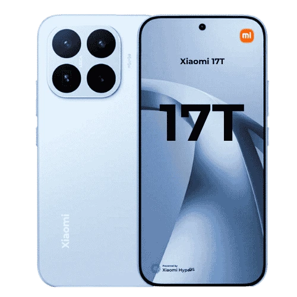

Number One Premium Mid-Range Phone in Nepal

In the number one position for the best premium mid-range phone in Nepal right now is the Xiaomi 17T. It is priced competitively compared to rivals like the Vivo V70, while still offering a pocketable form factor and premium touches that are usually reserved for more expensive devices. The design feels upscale, the fit and finish are excellent for the price, and the phone is comfortable to use one-handed for most users.
The Xiaomi 17T uses a well-optimised combination of hardware and software. You get the MediaTek Dimensity 8500 Ultra chipset paired with LPDDR5X memory and UFS 4.1 storage, which translates to snappy app launches, smooth multitasking, and strong sustained performance even under gaming load. Thermal management is solid for a mid-range device, so you won't see dramatic throttling during long sessions.
Likewise, the cameras on the Xiaomi 17T are impressive for the segment. The main sensor delivers detailed, colour-rich shots in daylight, and the 5x telephoto lens provides genuinely useful close-ups and portrait framing that many competitors lack. Image stabilization and reliable autofocus make it easy to capture sharp photos in most situations.
Because of the Leica optimization, the photos have a distinct character. You can take beautiful Leica-style portraits, including striking black-and-white shots. Night mode is competent as well — while not class-leading, it brings improved detail and reduced noise compared to many other phones in this price range.
The display experience is a highlight: a 12-bit AMOLED panel with 1.5K resolution and a 120Hz refresh rate provides vivid colours, deep blacks and very smooth animations. The panel supports high peak brightness for outdoor readability and wide color gamut coverage, so media and games look excellent. Touch response is responsive and the high refresh rate makes UI navigation feel fluid.
Battery life is strong thanks to the sizeable 6500mAh silicon-carbon battery — you should comfortably get a full day and often two days of mixed use. The 67W HyperCharge support tops the battery up quickly when you need it. Software-wise, HyperOS 3.0 on Android 16 is feature-rich and generally well-optimised, though it still includes some preinstalled apps and recommendations which can be disabled if you prefer a cleaner experience.